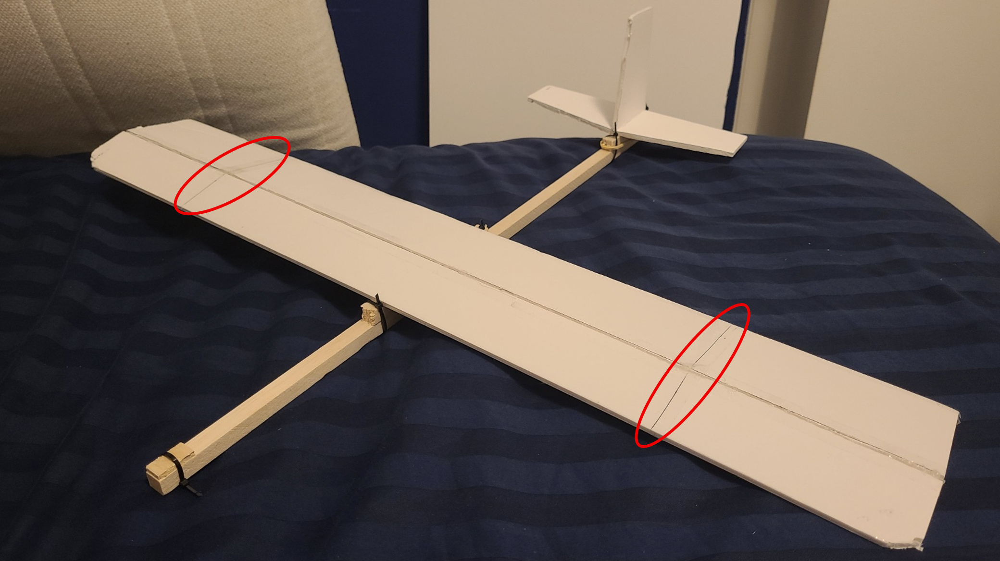

Principles of Flight
Aerodynamics
Materials
Model Balsa Glider
Personal project · 2024

Add glider.jpg to your repo to display the image hereI constructed a model glider at home as a personal project, utilising various aerodynamics and aircraft design principles (such as camber), as outlined below. I then conducted flight tests out in the open (at my local park) to estimate its glide ratio.
Thought process
- →Theoretically, all the individual components seen above could have just been glued together and flight performance would not be affected by any measurable amount. However, I wanted to ensure modularity i.e. by using the zip ties, I am able to remove and replace broken/upgraded parts, such as a new wing design. This level of customisation allows me to experiment with several different concepts without needing to re-build a whole airframe from scratch.
- →Material choice: foam board was chosen for the winged surfaces due to being fairly lightweight and stiff. A balsa wooden dowel was used for the fuselage as it possesses a high specific strength (i.e. good strength-to-weight ratio) and was easy to cut with a saw. As above, zip ties were used to enable modularity between aircraft platforms. The rubber band seen at the rear, holding the vertical and horizontal stabilisers, was employed for a similar reason to the zip ties, except that the rubber band can stretch longer than a zip tie. Some scotch tape was used as an additional layer of support holding the cambered wing surfaces in place, with no major trade-off in weight increase. Lastly, some scrap wood (as seen at the nose tip) and, later, some pennies, acted as counterweights for stability reasons.
Engineering principles
- →Optioneering: before construction, I had to settle on suitable dimensions as well as wing shape. Thus, I compared various options on a trade-off comparison matrix. Since this was my first attempt, and simplicity is key in engineering, I opted for a traditional single wing (like those found on airliners) instead of more complicated ideas like delta wings or adding struts.
- →Camber: despite a simple wing design, I had scope to incoporate features to improve the flying time and glide ratio. A more cambered (curved) aerofoil creates a greater pressure drop above the wing, and a greater magnitude resultant force as air particles accelerate over the wing due to the Coanda effect. By Newton's 3rd law, this creates a vertical reaction force upwards on the wing, which is lift. So increasing camber usually increases lift. To add this, I used an X-acto knife to create a cut roughly 1/3rd from the leading edge of the wing, from wingtip to wingtip. I bent this hinge back a bit to create a camber, as opposed to a straight flat surface, and applied hot glue to ensure this remained in position.
- →Dihedral: there are two additional X-acto knife cuts (circled in red) perpendicular to the camber line described in the previous bullet point. Folding the two smaller wing sections upwards will create a dihedral wing. This is not shown in the image, but is a feature of the next prototype of this same glider. This helped prevent the glider's tendency to roll to one side in-flight, consequently improving stability by keeping the wings level in straight and level flight. This is a feature found on passenger airliners, but not on military fighter jets (as they demand greater maneouverability, which dihedral directly mitigates).
Skills demonstrated
- →Problem-solving: I initially found the glider to be quite tail heavy (i.e. it would pitch up mid-flight, causing a stall and hence a rapid descent). To overcome this and achieve stability, I added small counterweights to the nose, such as pennies. This proved effective in shifting the centre of gravity further forward, leading to longer flight times and reduced stalling risk.
- →Good hand skills: these were required during the more precise tasks, such as operating the mini glue gun to fill in the cracks separating the two straight upper surfaces of the wing. This is vital in real-world engineering to guarantee precision and hence maximising safety (a vital consideration in commercial aviation).
- →Resilience: several stages of the process proved challenging, such as a shortage of foam board available and lack of experience with using some of the tools involved. I learnt to take a step back if things got tough, as this allowed me to reset my mental, before diving back in with a fresher perspective that ultimately reduced mistakes and actually saved time in the long run.